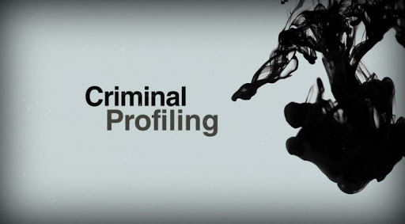

프롤로그 | 범죄란 무엇인가?
01 범죄는 법으로 금지하는 행위
02 범죄에는 가해자와 피해자가 존재한다
03 범죄 피해자를 위한 적극적인 지원
04 제삼자 '재정자'의 등장
05 형벌을 과하는 의미
06 범죄 보도의 형태와 현황
07 범죄에 불안감을 느끼는 사람들의 심리
08 '내재 이론'이 빠지는 위험성?
TOPICS 피해자가 가해자에게 심리적으로 공감하는
1 스톡홀롬 증후군
part. 1 | 범죄자는 왜 생겨나는가?
01 범죄자 연구의 변천
02 범죄를 유발하기 쉬운 지역 환경
03 문화 차이 때문에 범죄가 발생한다?
04 사회 제도의 변혁에서 무질서한 상태로
05 범죄자를 유형화한다
06 범죄가 발생하는 상황은 4가지
07 우연으로 시작해 발전하는 범행
08 콤플렉스와 범죄의 관계
09 왜 갑자기 폭발해 폭력적이 되는 걸까?
10 폭력적인 영상이나 게임은 범죄를 유발한다?
11 생각이 짧은 모방범과 비열한 유쾌범
12 술은 사람을 폭력적으로 만든다?
13 범죄자는 왜 남성이 많을까?
14 고령자의 범죄가 증가하고 있다
TOPICS 깨진 유리창을 방치하면
2 경범죄의 온상이 된다
part. 2 | 살의와 살인이 일어나는 이유?
01 살인은 5가지로 분류한다
02 사람을 죽이고 싶어지는 원한은 왜 생길까?
03 왜 벌컥 화가 나서 살인을 저지르게 될까?
04 근친 간에 많이 발생하는 살인
05 연쇄 살인과 대량 살인
06 '누구라도 좋으니 죽이고 싶다'는 묻지마 범죄
07 살인을 즐기는 쾌락 살인
08 잔혹한 살인자에게 양심은 없다?
09 범행 후에도 태연할 수 있는 이유는?
TOPICS 자살 욕구는
3 주위 사람을 끌어들이기도 한다
part. 3 | 성범죄를 일으키는 심리?
01 성범죄의 종류와 형벌
02 강간·강제 외설 - 남자는 왜 여자를 덮치는가
03 공연 음란 - 성적 겁쟁이의 또 다른 모습
04 훔쳐보기 - 시간 기호를 충족한다
05 속옷 훔치기 - 왜 속옷인가?
06 치한 - 혼잡함이 범행을 저지르게 한다
07 스토커 - 왜 집요하게 따라다니는가?
08 소아 성애 - 어린아이를 성적 대상으로
09 복지 범죄 - 소녀를 사거나 일하게 한다
TOPICS 인식의 차이에서 발생하는
4 희롱
part. 4 | 속고 속이는 심리?
01 속이는 사람의 심리
02 속는 사람의 심리와 결혼 사기
03 피싱은 왜 당하는 것일까?
04 신종교에 빠지는 사람, 신종교가 꾀하는 것
TOPICS 금전 욕구가 일으키는
5 보험금 사기, 대출 사기
part. 5 | 가족 간에 일어나는 가정 폭력과 학대?
01 가정 폭력과 학대는 무엇이 다른가?
02 남편이 아내에게 폭력을 행사한다
03 자신의 아이를 학대한다
04 자녀가 부모에게 폭력을 행사한다
05 고령자 학대는 왜 일어나는가?
06 작은 동물 학대는 비뚤어진 지배 욕구의 표현
TOPICS 가정 폭력으로부터 도망친 여성을 위한
6 보호소
part. 6 | 청소년 비행에 잠재된 어두운 마음?
01 옛날 비행과 요즘 비행은 무엇이 다른가?
02 비행이란, 청소년에 의한 범죄
03 비행 소년이 생겨나는 요인
04 청소년 비행이 심각해지는 과정
05 부모 자식이나 가족, 사회와의 관계가 중요
06 반사회적인 사고방식에 영향받을 때
07 사춘기는 마음이 요동치는 시기
08 불량한다는 낙인이 불량을 만든다
09 학교는 다양한 문제를 안고 있다
10 모범생이 불량하게 돌변할 때
11 집단 따돌림은 음험하고 잔혹한 범죄
12 '족族'이라는 스타일의 성쇠
TOPICS 청소년의 건전한 육성을 도모하는
7 소년 경찰 활동
part. 7 | 다양한 범죄의 심리?
01 습관처럼 좀도둑질을 하는 소년들
02 성인의 좀도둑질을 세태나 마음의 어둠을 반영
03 성실했던 사람이 범죄에 손을 댄다
04 절도는 가장 단순한 범죄
05 사람은 왜 범죄를 반복하는가?
06 소매치기는 직업적 범죄
07 방화는 '약자의 범죄'
08 교통 범죄는 '과실'이 아니다
09 성공률이 낮은 영리 목적의 유괴 사건
10 범행 성명을 발표하는 극장형 범죄
11 군중 심리가 지배하는 집단 린치
12 화이트칼라 범죄와 조직의 범죄
13 인터넷은 사이버 범죄의 온상
14 패션화하는 약물 사용
TOPICS '범죄 뒤에는 여자가 있다'는 말은 옛날 이야기?
8 지금은 오히려 여성이 범죄를 주도하기도
part. 8 | 죄에 대한 심판과 교정·갱생의 앞날?
01 범죄자가 재판에서 판결을 받을 때까지
02 기소인지, 불기소인지를 결정한다
03 일반인이 참가하는 재판원 재판
04 교도소의 역할이란?
05 청소년 비행은 어떻게 취급되는가?
06 소년법이 개정되어 무엇이 바뀌었나?
07 비행 소년의 심리를 분석한다
08 정신 질환자는 유죄인가, 무죄인가?
09 정신 감정은 언제 하는가?
10 정신 장애인의 범죄와 인권
11 마음의 병은 범죄로 이어지는가?
TOPICS '12명의 성난 사람들'과
9 '12명의 마음 약한 일본인'
part. 9 | 범죄 심리학이란?
01 범죄 심리학의 역사 ① - 실증적 검증의 시작
02 범죄 심리학의 역사 ② - 체격으로 분류
03 범죄 심리학의 역사 ③ - 유전과 지능
04 범죄 심리학과 관련된 분야
05 범죄 심리학의 범위는 넓다
06 범죄 원인론과 범죄 기회론
07 수사 심리학과 프로파일링
08 FBI 방식과 리버풀 방식
09 형사 재판에 관한 연구
10 범죄자 교정을 위한 교정 심리학